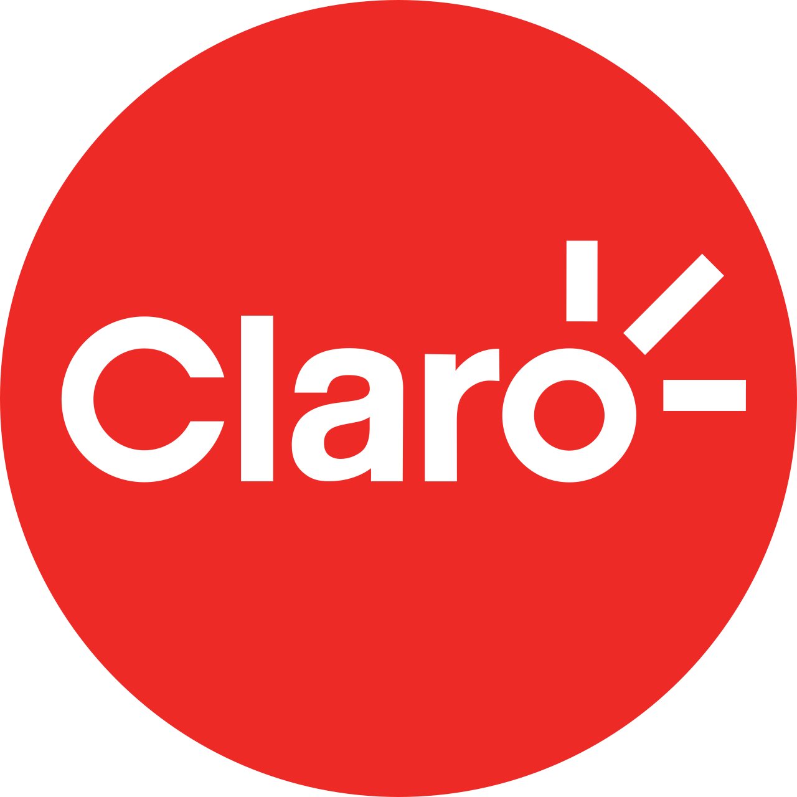

Sistema de Mesa de Ayuda & Help Desk
Plataforma orientada al registro, categorización y seguimiento de incidentes de soporte técnico. Implementa control de tiempos de atención (SLA), asignación por niveles de soporte y registro de incidencias resueltas.
Help Desk
Gestión de Incidentes
JavaScript ES6
HTML5 / CSS3